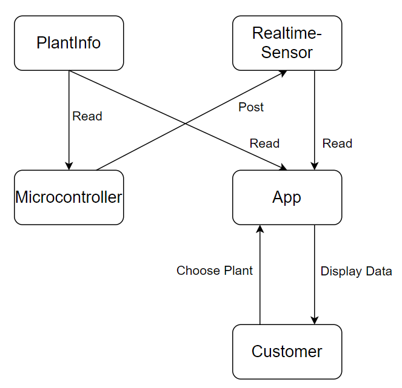

Why Firebase?
Firebase Realtime Database allows us to synchronize and access a large amount of data online. In our project, we use two sub-databasesThe first one, “PlantInfo”, contains the desired moisture and sunlight requirement for a variety of plants. Our microcontroller reads these standard values from the “PlantInfo” database as a reference for controlling the sunlight shade and the water pump. The second sub-database, “Realtime-Sensor”, stores the data from real-time sensor reading. The pot-body section of the YingXao Gardener posts the real-time sensor data to the firebase, and the App section reads those sensor data as well as the desired data for the specific plant, displaying them for customers.

Figure: software architecture of YingXao